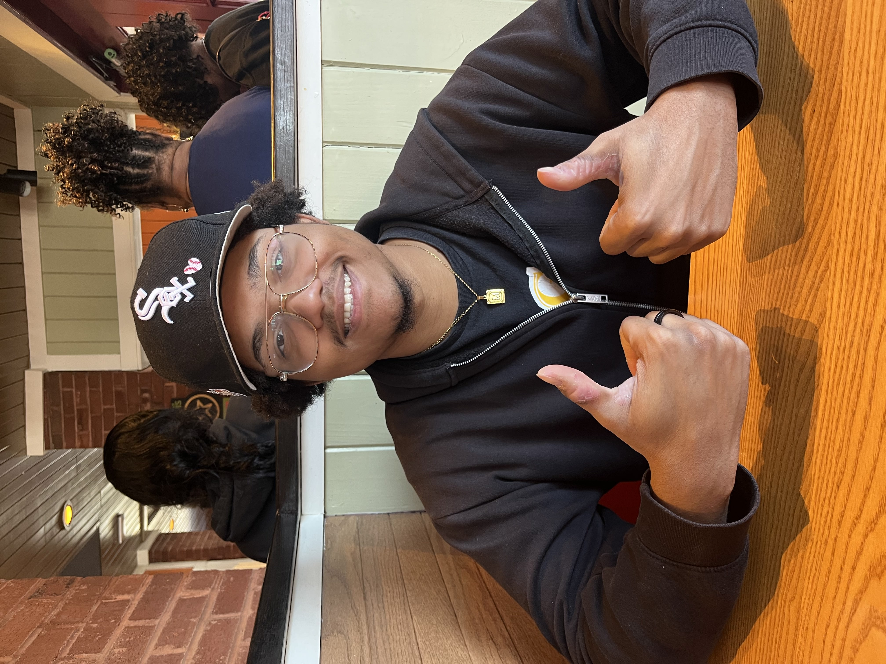

My name is Cameron Allen and I am a Junior Computer Science student at NC A&T. I am originally from Winston-Salem, NC. I enjoy playing videogames, coding personal projects, or creating music in my free time. I hope gain a better understanding of web development from this course, and learn more about how I can incorporate these skills into new personal projects
